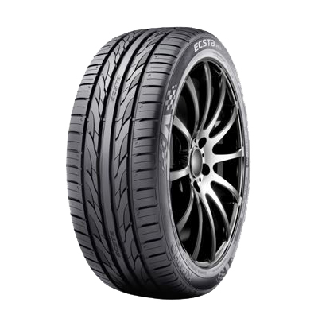

Kumho PS31 165/55R14

RM 155.00
The Kumho Ecsta PS31 is an ultra-high-performance (UHP) summer tyre designed for sporty handling, responsive steering and high-speed stability. Its directional tread pattern and four wide circumferential grooves enhance water drainage and aquaplaning resistance. The solid centre rib improves braking and cornering stability, while 3D dimple technology reduces heat build-up for enhanced durability. An excellent choice for sporty daily driving and highway performance.
Klang Hock Li Tyre Services Sdn Bhd, Klang, Selangor, Malaysia.
View live product details and enquire